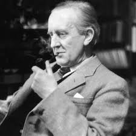

1.1. Djetinstvo
John Ronald Reuel Tolkien rođen je 3. siječnja 1892. u Bloemfonteinu u Narančastoj Slobodnoj Državi (koju je kasnije pripojilo Britansko Carstvo; sada provincija Slobodne Države u Južnoafričkoj Republici) od Arthura Reuela Tolkiena (1857. - 1896.),upravitelja engleske banke i njegove supruge Mabel, rođena Suffield (1870–1904). Par je napustio Englesku kad je Arthur unaprijeđen na čelo ureda Bloemfonteina britanske banke za koju je radio.
Kad su mu bile tri godine, otišao je u Englesku s majkom i bratom u, kako je predviđeno, dugotrajnu obiteljsku posjetu. Njegov je otac, međutim, umro u Južnoj Africi od reumatske groznice prije nego što im se mogao pridružiti. To je obitelj ostavilo bez prihoda, pa ga je Tolkienova majka odvela živjeti s roditeljima u Kings Heath.
Mabel Tolkien učila je dvoje djece kod kuće. Ronald je, kako su ga poznavali u obitelji, bio oduševljen učenik. Mladi Tolkien volio je crtati krajolike i drveće, ali najdraže lekcije bile su mu jezike i majka ga je vrlo rano naučila osnovama latinskog. Tolkien je mogao čitati do četvrte godine i ubrzo je mogao tečno pisati. Mabel Tolkien primljena je u Rimokatoličku crkvu 1900. unatoč žestokim prosvjedima njezine baptističke obitelji , što joj je zaustavilo svaku financijsku pomoć.
Godine 1904., kad je J. R. R. Tolkien imao 12 godina, majka mu je umrla od akutnog dijabetesa u vikendici Fern u Rednalu, koju je iznajmljivala. Mabel Tolkien dodijelila je skrbništvo nad svojim sinovima svom bliskom prijatelju, ocu Francisu Xavieru Morganu iz birminghamskog oratorija, kojemu je dodijeljeno da ih odgaja kao dobre katolike.
Tolkien je odrastao u području Edgbastona u Birminghamu i pohađao školu kralja Edwarda u Birminghamu, a kasnije i školu St. Philip. 1903. godine osvojio je zakladnu stipendiju i vratio se kralju Edwardu. Dok je tamo bio učenik, Tolkien je bio jedan od kadeta školskog oficirskog zbora koji je pomogao da se postavi put za krunidbenu paradu kralja Georgea 1910. 1910. Kao i ostali kadeti kralja Edwarda, Tolkien je postavljen pred vrata Buckinghamske palače .
1.2. Prvi svijetski rat
U kolovozu 1914. Britanija je ušla u Prvi svjetski rat. Tolkienova rodbina bila je šokirana kad je odlučio da se ne prijavi odmah u britansku vojsku. U pismu svom sinu Michaelu 1941. godine, Tolkien se prisjetio: "U to su se doba momci pridružili ili su ih javno prezirali. "
Umjesto toga, Tolkien je "podnio nesvjesticu", i ušao u program kojim je odgađao prijavu do završetka studija. Položio završni ispit u srpnju 1915. godine. Naređen je za privremenog poručnika u Lancashire Fusiliersu 15. srpnja 1915.Trenirao je s 13. (pričuvnom) bataljunom na Cannock Chaseu, kampu Rugeley blizu Rugeleyja u državi Staffordshire, 11 mjeseci.
Tolkien je 2. lipnja 1916. primio brzojav kojim ga poziva u Folkestone zbog poštarine u Francuskoj. Tolkiens je noć prije njegova odlaska proveo u sobi u hotelu Plow & Harrow u Edgbastonu u Birminghamu.
1.3. Civilni život
Dana 3. studenog 1920. Tolkien je demobiliziran i napustio je vojsku, zadržavši svoj čin poručnika. Njegov prvi civilni posao nakon Prvog svjetskog rata bio je u Oxfordskom rječniku engleskog jezika, gdje je uglavnom radio na povijesti i etimologiji riječi germanskog podrijetla počevši sa slovom W. Godine 1920. zauzeo je mjesto čitatelja na engleskom jeziku na Sveučilištu u Leedsu, postajući tamo najmlađi profesor.
Sredinom 1919. počeo je podučavati dodiplomske studente privatno, što je najvažnije one Lady Margaret Hall i St Hugh's College, s obzirom na to da su ženski fakulteti u svojim ranim godinama jako trebali dobre učitelje.
Za vrijeme boravka na koledžu Pembroke Tolkien je napisao Hobita i prva dva toma Gospodara prstenova, dok je živio na Northmoor Roadu 20 u sjevernom Oxfordu (gdje je plava ploča postavljena 2002. godine). Također je objavio filološki esej 1932. o imenu "Nodens", nakon što je Sir Mortimer Wheeler otkopao rimski Asklepejon u parku Lydney, Gloucestershire, 1928.
1.4. Drugi svijetski rat
Uoči Drugog svjetskog rata Tolkien je bio postavljen kao razbijač kodova. U siječnju 1939. pitali su ga hoće li biti spreman služiti u kriptografskom odjelu Ministarstva vanjskih poslova u slučaju nacionalne nužde. Odgovorio je potvrdno i, počevši od 27. ožujka, pohađao tečaj u londonskom sjedištu Vladinog kodeksa i škole Cypher. Pronađen je zapis o njegovom usavršavanju koji je sadržavao zapis "oduševljen" pored njegovog imena. " U listopadu su ga obavijestili da njegove usluge neće biti potrebne
1.5. Mirovina i smrt
Godine 1945. Tolkien se preselio na Merton College u Oxfordu, postajući Mertonov profesor engleskog jezika i književnosti, na kojem je ostao do umirovljenja 1959. Dugi niz godina služio je kao vanjski ispitivač na Sveučilišnom koledžu u Dublinu. 1954. Tolkien je dobio počasnu diplomu na Nacionalnom sveučilištu u Irskoj (čiji je UCC bio sastavni koledž). Tolkien je završio Gospodar prstenova 1948., blizu desetljeća nakon prvih skica.
Pozornost obožavatelja postala je toliko intenzivna da je Tolkien morao izvaditi svoj telefonski broj iz javnog imenika, a na kraju su se on i Edith preselili u Bournemouth, koji je tada bio morsko odmaralište pod pokroviteljstvom britanske više srednje klase.
Edith je umrla 29. studenoga 1971. Dao je ugravirati ime Lúthien na Edithinom nadgrobnom spomeniku na groblju Wolvercote u Oxfordu. Kad je Tolkien umro 21 mjesec kasnije, 2. rujna 1973. od čira koji je krvario i infekcije prsnog koša, u dobi od 81 godine, pokopan je u istom grobu, uz Beren kao dodatak na svoje ime.
| Djelo | Godina izdanaja | Izdavač | |||
| Beren and Luthien | 2017 | Harper Collins | |||
| The Fall of Gondolin | 2018 | Houghton Mifflin Harcourt | |||